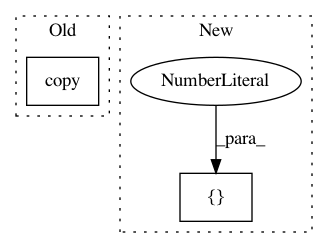

586b49b07574f7812101248c94d73ef1fb2a5c12,mltsp/tests/test_predict.py,,test_add_to_predict_results_dict,#,37
Before Change
def test_add_to_predict_results_dict():
Test add data to predict results dict
for suffix in ["targets.npy", "features.csv"]:
shutil.copy(
pjoin(DATA_PATH, "test_%s" % suffix),
pjoin(cfg.FEATURES_FOLDER, "TEST001_%s" % suffix))
results_dict = {}
pred.add_to_predict_results_dict_classification_proba(
results_dict, [[0.2, 0.5, 0.3]], "TT.dat",
[1, 2, 3], {"f1": 2}, "TEST001", 5)
After Change
Test add data to predict results dict
results_dict = {}
preds = pd.Series({"class1": 0.2, "class2": 0.5, "class3": 0.3}, name=0)
ts_data = np.array([[1., 2., 3.], [4., 5., 6.]])
predict.add_to_predict_results_dict_classification_proba(
results_dict, preds, "TT.dat",
ts_data, {"f1": 2}, "TEST001", 5)
In pattern: SUPERPATTERN
Frequency: 3
Non-data size: 2
Instances
Project Name: cesium-ml/cesium
Commit Name: 586b49b07574f7812101248c94d73ef1fb2a5c12
Time: 2015-11-11
Author: brettnaul@gmail.com
File Name: mltsp/tests/test_predict.py
Class Name:
Method Name: test_add_to_predict_results_dict
Project Name: luispedro/mahotas
Commit Name: 3035cc365d6a2d4a379212b158eb577cdd2bd39c
Time: 2012-11-28
Author: luis@luispedro.org
File Name: mahotas/tests/test_median_filter.py
Class Name:
Method Name: _slow_rank_filter
Project Name: nilmtk/nilmtk
Commit Name: 0ac7cecce4f147011037fcb79dfd57867b8329a8
Time: 2014-12-19
Author: jack-list@xlk.org.uk
File Name: nilmtk/metergroup.py
Class Name: MeterGroup
Method Name: plot_good_sections